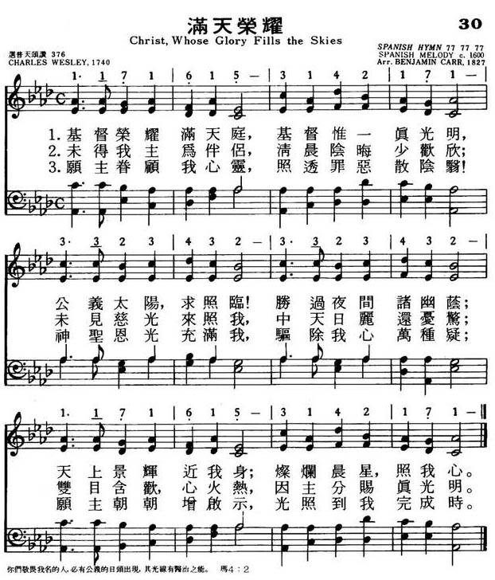

0667 0662c Christ, Whose Glory Fills the Skies _Charles
Wesley 基督榮耀滿天庭
▲
| 簡介
Christ, Whose Glory Fills the Skies |
| This well-crafted morning hymn opens
by celebrating daylight as an image of Christ, the true Light, then
ponders life without light, and culminates in a prayer for inward light.
The tune’s name honors its German roots: Ratisbon is the former English
name for Regensburg. |
|
|
【滿天榮耀】
詩集：頌主新歌，30 |
|
1 See whose glory fills the skies:
Jesus, the light of the world!
Sun of righteousness, arise:
Jesus, the light of the world!
Refrain:
We'll walk in the light!
Beautiful light!
Shine where the dewdrops of mercy shine bright.
Oh, shine all around us by day and by night,
Jesus, the light of the world.
2 Pierce the gloom of sin and grief,
Jesus, the light of the world!
Scatter all my unbelief,
Jesus, the light of the world! [Refrain]
3 More and more thyself display,
Jesus, the light of the world!
Shining to the perfect day,
Jesus, the light of the world! [Refrain]
4 Visit, then, this soul of mine,
Jesus, light of the world!
Fill me, Radiancy divine!
Jesus, the light of the world! [Refrain]
Source: Voices Together #274
|
基督榮耀滿天庭，基督惟一真光明；
公義太陽，求照臨！勝過夜間諸幽蔭；
天上景輝近我身，燦爛晨星，照我心。
未得我主為伴侶，清晨陰晦少歡欣；
未見慈光來照我，中天日麗還憂驚；
雙目含歡，心火熱，因主分賜真光明。
願主眷顧我心靈，照透罪惡散陰翳！
神聖恩光充滿我，驅除我心萬種疑；
願主朝朝增啟示，光照到我完成時。
|
|

https://www.mred365.cn/dsm/szxg/pic/30.jpg
 |
| |
|
| 30. 滿天榮耀 (Christ,
Whose Glory Fills The Skies) |
基督榮耀滿天庭，基督惟一真光明； |
[Midi] |
| 399 |
滿天榮耀 |
Christ, whose glory fills the skies |
早禱 |
399 |
http://echo.hkskh.org/series_article.aspx?lang=2&id=120&nid=4276
基督榮耀滿天庭，基督唯一真光明，
公義太陽，求照臨！勝過夜間諸幽蔭；
天上景輝，近我身；燦爛晨星，照我心。
未得我主為伴侶，清晨陰晦少歡欣；
未見慈光來照我，中天日麗還憂驚；
雙目含歡，心火熱，因主分賜真光明。
願主眷顧我心靈，照透罪惡散蔭翳！
神聖恩光充滿我；驅除我心萬種疑；
願主朝朝增啓示，光照到我完成時。
在東方教會，基督易容顯光日（8月6日）早於第五世紀時已經出現。教宗嘉禮三世（Callistus
III）將這個節日訂於8月6日慶祝，以紀念1456年貝爾格萊德圍城戰。
英語教會使用的詩集，有不少是為基督易容顯光日而寫的聖詩，然而《普天頌讚》，只有一首聖詩在節期部分指明是供這個聖日使用，但其實還有其他適合的聖詩，例如今期要為大家介紹的《滿天榮耀歌》。
白特理（Ian Bradley）的《聖詩簡介》（The Book of Hymns）中，指出聖詩作者查理斯．衞斯理（Charles Wesley
1707-88）是在聖詩《怎能如此》（And can it be，《青年聖歌II》第19首）寫畢不久後，寫成《滿天榮耀歌》。此詩首次收錄於他與其兄在1740年出版的《聖詩與靈歌》（Hymns
and Spritual Songs）中。但後來出現的《衞斯理詩集》一直未有收錄此詩，直至1875年才再次出現。
一如許多衞斯理的作品，聖詩用了許多取自聖經的形像，第一節第三句的「公義太陽」，就是取自瑪拉基書：「但是，對你們敬畏我名的人，必有公義的太陽出現，其光線有醫治的能力。」（瑪四：2）另外，「天上景輝，近我身」一句，與《以色列頌》中「使清晨之日光，自高天照臨我等；要光照居於幽暗死地之人」一句，有異曲同曲之妙。彼得後書第一章19節：「我們有先知更確實的信息，你們要好好地留意這信息，如同留意照耀在暗處的明燈，直到天亮，晨星在你們心�堣仱_的時候」就成了「燦爛晨星，照我心」一句。
第二及第三節的詩詞，就在喬治·伊略特（George Eliot）的小說《亞當·柏德》中被引用。
曲調方面，最初常用調為德國曲調「Heidelberg」，而現在最常用的曲調為「Ratisbon」。後者亦是一首德國曲調，首見於1815年在萊比錫出版的眾讚詩集。
https://hymnary.org/text/christ_whose_glory_fills_the_skies
Notes
Scripture References:
st. 1 =John 8:12, 2 Pet. 1:19, Luke 1:78, Mal. 4:2, Ps.27:1
Written by the great hymn
writer Charles Wesley (PHH
267), this text was published in three stanzas in Hymns and Sacred
Poems, compiled in 1740 by Charles Wesley and his" brother John.
James Montgomery called it "one of Charles Wesley's loveliest progeny.”

Titled "Morning Hymn" by
Wesley, it is unusual in that it does not contain the customary reference to
the previous night's rest or to the work and dangers of the day ahead. The
text begins by placing the focus entirely on Christ, the "light of the
world," the sun of Righteousness who rises with healing in his wings"; he is
the "Dayspring" and "Daystar." Thus the "light of Christ" is to fill our
lives and lead us forward "to the perfect day."
Liturgical Use:
As a morning hymn during the Easter vigil service and during Advent; other
services that have as their theme Christ as "light."
--Psalter Hymnal
Handbook
====================
Christ, Whose
glory fills the skies, Christ the true, &c. C. Wesley. [Morning.]
First published in J. and C. Wesley's Hymns and Sacred Poems, 1740,
p. 61, in 3 stanzas of 6 lines, and entitled "A Morning Hymn" (Poetical
Works, 1868-72, vol. i. p. 224). In 1776, A. M. Toplady included it,
unaltered, in his Psalms and Hymns, No. 296, and for many years it
was quoted as his production. Montgomery, however, corrected the error in
his Christian Psalmist in 1825. Its extensive use in the Church of
England, and by Nonconformists, is due mainly to Toplady and Montgomery. The
latter held it in special esteem, and regarded it as "one of C. Wesley's
loveliest progeny." In its complete form it was not included in the Wesleyan
Hymn Book until 1875. Its use is very extensive. The hymn:—"Thou, Whose
glory fills the skies," as found in the People's Hymnal, 1867, No.
570, is the same hymn with slight alterations. In the Society for Promoting
Christian Knowledge Church Hymns, the doxology is from the Cooke
and Denton Hymnal, 1853; stanzas ii. and iii. have also been used
in the cento "O disclose Thy lovely face," q. v. It has been rendered into
Latin by the Rev. R. Bingham, in his Hymnologia Christiana Latina,
1871, as "Christe, cujus gloriae." The American use of the original is
extensive.
--John Julian, Dictionary
of Hymnology (1907)
LUX PRIMA (Gounod)
Composer: Charles F. Gounod (1872)
Notes
French romanticist
composer Charles F. Gounod (PHH
165) wrote LUX PRIMA, which means "first light" in Latin. When the
Franco-Prussian War broke out in 1870, Gounod left his native Paris and
settled in England for five years. This sturdy tune was published in the
Scottish Hymnary in 1872.

It uses several melodic
sequences and builds to a climax in its last line. Sing in parts throughout
with moderate to strong accompaniment. RATISBON, the suggested alternate
tune, is found with this text in many other hymnals, but its isorhythmic
(all equal rhythms) shape doesn't fit this text as well as Gounod's livelier
LUX PRIMA.
--Psalter Hymnal
Handbook, 1988
https://www.umcdiscipleship.org/resources/history-of-hymns-morning-hymn-celebrates-christ-as-light-of-the-world
“Christ, Whose Glory Fills the Skies”
Charles Wesley
UM Hymnal, No. 173
Charles Wesley
Christ, whose glory fills the skies,
Christ, the true, the only light,
Sun of Righteousness, arise,
Triumph o’er the shades of night;
Dayspring from on high, be near;
Day-star, in my heart appear.
The 18th-century Englishman Charles Wesley (1707-1788) wrote, according to
eminent 20th-century hymnologist Erik Routley, “more than 8,989 poems with over
6,000 of them qualifying as ‘hymns.’” That’s 3.4 poems per week, Routley added,
“assuming him to have died in the act of writing.”
Judging solely by quantity, Wesley can be matched by few sacred poets in
history. The quality and depth of theology found in these hymns, however, is why
hymnologist Routley dubbed Wesley “the first and, surely for all time, the
greatest evangelical hymn writer.”
From the beginning of their movement, Methodists included many of his texts in
their hymnals. Of the 980 hymns included in the English Methodist Hymn Book
(1904), 440 are by Charles Wesley. The next edition in 1933 still used 243 of
his poems.
Of the many great hymns by Charles Wesley, “Christ, Whose Glory Fills the Skies”
is considered one of his best. American Methodist hymnologist Robert McCutchan
quotes hymnal editor Alexander MacMillan saying it is “one of the greatest
morning hymns in our language, but it is more. It is a glorious hymn to Christ,
the Sun of Righteousness, the Light of the World.”
Originally titled “A Morning Hymn,” this hymn first appeared in the Wesley
collection Hymns and Sacred Poems (1740) in three stanzas as well as other
collections prepared by the Wesley brothers. In Hymns Ancient and Modern (1861)
it was first paired with RATISBON, the tune that most often accompanies the text
today.
Wesley begins the hymn with the antithesis between light and night. Also found
throughout the first stanza is the personification of “Sun,” “Dayspring” and
“Daystar.” The personification of these objects engages the singer’s imagination
and creates vivid pictures in the mind.
In stanza two of this hymn, Wesley uses the first words of each line to tell the
story of redemption. The first three lines begin with “Dark,” “Unaccompanied,”
and “Joyless.” The plight of humanity has been set. The next two lines begin
with “till” which represents hope for salvation. Finally, after the hope is
given and the work is done, line six begins with the “Cheer” which comes from
our redemption through Jesus Christ.
In stanza three Wesley once again personifies an idea that represents a deeper
meaning so that it might have life in the singer’s imagination. “Radiancy
divine” is personified in lines three and four. The picture of scattering our
unbelief is wonderfully cheerful, which is only appropriate after sin and grief
have been pierced. As Wesley comes to his dramatic close, he employs the
technique of epizeuxis (“more and more”) to show the excitement of the writer as
well as the singer. The repeating of “more” at that moment implies the idea that
we can never see enough of the “Radiancy divine” which has “[pierced] the gloom
of sin and grief.”
Scripture references may be found throughout, ranging from books of prophecy to
a literal incarnation account in Luke and a theological incarnation account in
John. The Rev. Carlton Young, editor of the UM Hymnal (1989), points out a
reference to John 1:9 concerning the “true light” in line two. Stanza one
continues with direct references to Isaiah 2:6 and Malachi 4:2 in line three
about the “Sun of Righteousness.” The “Day-star” in line six is a direct
reference to Isaiah 14:12 and 2 Peter 1:19.
Routley explores two interesting ideas about this hymn in his book, Hymns and
the Faith (1968). First he points out that the idea of worshipping the sun was a
pagan religion. By referencing Christ as the “Sun of Righteousness,”
Christianity has put “back on the right track religious instincts which had gone
astray.”
The other idea concerns the very first word of the hymn. Routley states that
“God, whose glory fills the sky” would not have been anything out of the
ordinary. He continues that “Christ, whose glory fills the sky” is an “epic”
idea that until this hymn had not been present in Christian thinking or writing.
Christ is no longer a being that can only be at one place at one time, but he is
one with God in his omnipresence and omniscience.
Routley rightly proclaims, “Never was written a more thoroughly and richly happy
hymn than this.”
“Christ, Whose Glory Fills the Skies”
Charles Wesley
UM Hymnal, No. 173
Charles Wesley
Christ, whose glory fills the skies,
Christ, the true, the only light,
Sun of Righteousness, arise,
Triumph o’er the shades of night;
Dayspring from on high, be near;
Day-star, in my heart appear.
The 18th-century Englishman Charles Wesley (1707-1788) wrote, according to
eminent 20th-century hymnologist Erik Routley, “more than 8,989 poems with over
6,000 of them qualifying as ‘hymns.’” That’s 3.4 poems per week, Routley added,
“assuming him to have died in the act of writing.”
Judging solely by quantity, Wesley can be matched by few sacred poets in
history. The quality and depth of theology found in these hymns, however, is why
hymnologist Routley dubbed Wesley “the first and, surely for all time, the
greatest evangelical hymn writer.”
From the beginning of their movement, Methodists included many of his texts in
their hymnals. Of the 980 hymns included in the English Methodist Hymn Book
(1904), 440 are by Charles Wesley. The next edition in 1933 still used 243 of
his poems.
Of the many great hymns by Charles Wesley, “Christ, Whose Glory Fills the Skies”
is considered one of his best. American Methodist hymnologist Robert McCutchan
quotes hymnal editor Alexander MacMillan saying it is “one of the greatest
morning hymns in our language, but it is more. It is a glorious hymn to Christ,
the Sun of Righteousness, the Light of the World.”
Originally titled “A Morning Hymn,” this hymn first appeared in the Wesley
collection Hymns and Sacred Poems (1740) in three stanzas as well as other
collections prepared by the Wesley brothers. In Hymns Ancient and Modern (1861)
it was first paired with RATISBON, the tune that most often accompanies the text
today.
Wesley begins the hymn with the antithesis between light and night. Also
found throughout the first stanza is the personification of “Sun,”
“Dayspring” and “Daystar.” The personification of these objects engages the
singer’s imagination and creates vivid pictures in the mind.
In stanza two of this hymn, Wesley uses the first words of each line to
tell the story of redemption. The first three lines begin with “Dark,”
“Unaccompanied,” and “Joyless.” The plight of humanity has been set. The next
two lines begin with “till” which represents hope for salvation. Finally, after
the hope is given and the work is done, line six begins with the “Cheer” which
comes from our redemption through Jesus Christ.
In stanza three Wesley once again personifies an idea that represents a
deeper meaning so that it might have life in the singer’s imagination. “Radiancy
divine” is personified in lines three and four. The picture of scattering our
unbelief is wonderfully cheerful, which is only appropriate after sin and grief
have been pierced. As Wesley comes to his dramatic close, he employs the
technique of epizeuxis (“more and more”) to show the excitement of the
writer as well as the singer. The repeating of “more” at that moment implies the
idea that we can never see enough of the “Radiancy divine” which has “[pierced]
the gloom of sin and grief.”
Scripture references may be found throughout, ranging from books of
prophecy to a literal incarnation account in Luke and a theological incarnation
account in John. The Rev. Carlton Young, editor of the UM Hymnal (1989), points
out a reference to John 1:9 concerning the “true light” in line two.
Stanza one continues with direct references to Isaiah 2:6 and Malachi
4:2 in line three about the “Sun of Righteousness.” The “Day-star” in line six
is a direct reference to Isaiah 14:12 and 2 Peter 1:19.
Routley explores two interesting ideas about this hymn in his book, Hymns and
the Faith (1968). First he points out that the idea of worshipping the sun was a
pagan religion. By referencing Christ as the “Sun of Righteousness,”
Christianity has put “back on the right track religious instincts which had gone
astray.”
The other idea concerns the very first word of the hymn. Routley states that
“God, whose glory fills the sky” would not have been anything out of the
ordinary. He continues that “Christ, whose glory fills the sky” is an “epic”
idea that until this hymn had not been present in Christian thinking or writing.
Christ is no longer a being that can only be at one place at one time, but he is
one with God in his omnipresence and omniscience.
Routley rightly proclaims, “Never was written a more thoroughly and richly happy
hymn than this.”
Mr. Hehn is a candidate for the master of sacred music degree, Perkins School of
Theology, and studies hymnology with Dr. Michael Hawn.
https://www.hymnologyarchive.com/christ-whose-glory-fills-the-skies
including
O disclose thy lovely face
with
DEDICATION
RATISBON
LUX PRIMA
HEATHLANDS
I. Text: Origins
Charles Wesley (1707–1788), having been raised and trained in the Church of
England, was familiar with the rhythms of Christian worship, especially as laid
out by the Book of Common Prayer, the 1662 revision, which appoints orders for
morning and evening prayer. Early in his hymn-writing career, he composed a set
of three hymns for morning and evening, published in Hymns and Sacred Poems
(1740), the most enduring of which has been “Christ, whose glory fills the
skies” (Fig. 1). The original version consisted of three stanzas of four lines,
printed without music.
View fullsize
1740-HymnsSacredPoems-39.jpg
View fullsize
Fig. 1. Hymns and Sacred Poems (London: W. Strahan, 1740).
Fig. 1. Hymns and Sacred Poems (London: W. Strahan, 1740).
This hymn was not included in this form in any other collections published by
the Wesleys in their lifetimes. A different hymn beginning “Christ, whose glory
fills the skies, / That famous Plant thou art!” appeared in Short Hymns on
Select Passages of the Holy Scriptures (1762), vol. 2, no. 1267, based on
Ezekiel 34:29-30. That one was adopted into their career-spanning A Collection
of Hymns for the Use of the People Called Methodists (1780), at no. 517. The
1740 hymn was included too at no. 150, except John transplanted a stanza from
“Lord, how long, how long shall I”—another hymn which had not seen the light of
day since Hymns and Sacred Poems (1740 | Fig. 2)—and he used it to make an
amalgamated hymn starting with “O disclose thy lovely face” followed by the
second and third stanzas from the original “Christ, whose glory fills the skies”
(Fig. 3).
View fullsize
Fig. 2. Hymns and Sacred Poems (1740).
Fig. 2. Hymns and Sacred Poems (1740).
View fullsize
Fig. 3. A Collection of Hymns (1780).
Fig. 3. A Collection of Hymns (1780).
Initially, the 1740 hymn was not widely received in the Wesleys’ lifetimes. It
is not known to have been printed with music before 1820. John Julian (1892)
credited the hymn’s later proliferation to its appearance in collections by
Augustus Toplady (1740–1778) and James Montgomery (1771–1854). The 1780
cross-bred version, starting “O disclose thy lovely face,” was adopted into
other collections, reprinted throughout the 1800s, but it has since fallen out
of use in favor of the original text.
II. Analysis
This hymn, like so many of Wesley’s hymns, contains several Scripture allusions.
The idea of the glory of the Lord filling the skies, especially at morning, can
be seen in passages such as Exodus 16:7 (“In the morning you shall see the glory
of the Lord”) or 2 Samuel 23:4 (“He dawns on them like the morning light”).
Jesus said, “I am the light of the world” (John 8:12, 9:5), and John called him
“The true light, which gives light to everyone” (John 1:9). Wesley used the name
“Sun of Righteousness,” which is from Malachi 4:2. He used this name frequently
in his hymns, including “Hark! the herald angels sing,” “Come, O thou traveller
unknown,” the original 18-stanza form of “O for a thousand tongues to sing,” and
“Sun of unclouded righteousness.” The name “Day-spring from on high” is from
Luke 1:78, especially in the King James Version (1611) and the Book of Common
Prayer (1662). Similarly, “Day-star in my heart appear” is almost a direct quote
from 2 Peter 1:19.
After the rich infusion of Scripture, Wesley shifted his approach. As Carl Daw
has noted, “Wesley does not continue with this intense level of scriptural
allusion but moves ahead with a logician’s or rhetorician’s tendency to
emphasize the desirable by considering its opposite.”[1] The second stanza
speaks of how the return of natural daylight in the morning is still dark,
cheerless, and joyless, if it is without the mercy of Christ. The third stanza
is a prayer, asking for Christ to pierce the heart and be displayed in the life
of the worshiper.
Reformed scholar Bert Polman believed this morning hymn was “unusual in that it
does not contain the customary reference to the previous night’s rest or to the
work and dangers of the day ahead.”[2]
James Montgomery is often quoted for his endorsement of the hymn, calling it one
of Wesley’s “loveliest progeny.” In the preface to his Christian Psalmist
(1825), in the process of summarizing the hymns of Toplady, he mentioned a
situation in which “Christ whose glory fills the skies” had often been
misattributed to Toplady:
Had this poem appeared without name, it might have been confidently set down as
the production of Charles Wesley—as one of Charles Wesley’s loveliest progeny
has been fathered upon Augustus Toplady.[3]
Timothy Dudley-Smith agreed with Montgomery’s idea:
Montgomery’s praise was entirely justified. These verses are indeed some of the
loveliest written by Charles Wesley, with a poetic imagery that is beautifully
handled within the metre. They are based on the Benedictus (Luke 1: 68-79), with
which he would have been daily familiar from the Order for Morning Prayer in the
Prayer Book.[4]
J.R. Watson has praised it also, saying, “from the brilliant assurance of the
first line to the triumphant final image, it has a poetic sweep and imaginative
command that are rare even for Charles Wesley.”[5] He explained further
elsewhere:
The three verses are economical, absolutely functional in that there are no
distractions from the theme, and wonderfully accommodated to the rhythm and
metre. It could be said of the first line that, as Christ’s glory fills the
skies, so the words exactly fill the line, beginning a hymn which is rare in its
taut control and imaginative power.[6]
Erik Routley put the nature of this morning hymn in the context of two others
from the broader repertoire:
“Sun of righteousness” caught the imagination of Charles Wesley, and here we
find it; along with that other picturesque and old-fashioned word, “Dayspring.”
Now this gives “Christ, whose glory” a universality which places it apart from
all other morning hymns. Compare it with Bishop Ken’s [“Awake, my soul, and with
the sun”], which we noticed above, or with Keble’s [“New every morning is the
love”]. The Bishop gives us solid, down-to-earth, honest puritan counsel; the
country parson gives gentle advice about the sanctification of daily routine.
But Wesley talks all the time about the glory of Christ. “Christ, whose glory
fills the skies”—the late Bernard Manning called the phrase “Dantesque,” and
that is not undue praise. It is as bold a conception as you will find anywhere
in all the hymn-books. …
For whereas Ken’s excellent lines tell us to do our duty, and Keble’s tell us
that God can make the dullest work profitable to his glory, what Wesley is here
saying amounts to no less than a prayer that, through the present day, my life
may be comformable to the mystery of the Gospel. … To pray, “Sun of
righteousness, arise, … Daystar, in my heart appear,” is to pray that the
miracle of the incarnation may be re-enacted in my own person; that will and
affections may be the very habitation of Christ even as Bethlehem’s stable was
his habitation. We sing “Visit then this soul of mine,” and we mean just what we
meant when we sang “Visit us with thy salvation” in “Love divine [all loves
excelling].” We mean (as is explained at that place) not merely “come,” but
“come and convert and conquer.”[7]
The great irony of the hymn is in the way it is so masterfully treated by
scholars, in spite of its near-dismissal by the Wesleys in favor of the 1762
version, which turned out to be the one set aside by generations to follow.
Given the hymn’s textual association with the Song of Zechariah and the theme of
light, the hymn is particularly well suited for the season of Advent.
III. Tunes
1. DEDICATION
In the fifth through seventh editions of A Collection of Hymns (1786–1791), the
Wesleys recommended the tune DEDICATION for the version of the hymn beginning “O
disclose thy lovely face.” The tune first appeared anonymously in Thomas Butts’
Harmonia Sacra (ca. 1754), and from there it was adopted into the Wesleys’
Select Hymns with Tunes Annext (1761, rev. 1765) and Sacred Harmony (1780 | Fig.
4). From its first printing through 1820, it was invariably set to a doxology
text, “Father, Son, and Holy Ghost,” from Hymns on the Lord’s Supper (1745).

View fullsize
1780-SacredHarmony-103.jpg
![Fig. 4. Sacred Harmony [Revised Ed.] (ca. 1789).](https://images.squarespace-cdn.com/content/v1/5b11858da2772cf01402ee6e/1588705409553-5R0QMHKV0LUOCUJ0FPFA/ke17ZwdGBToddI8pDm48kE_Y9fCKxaOStHVXN-43v8x7gQa3H78H3Y0txjaiv_0fDoOvxcdMmMKkDsyUqMSsMWxHk725yiiHCCLfrh8O1z5QPOohDIaIeljMHgDF5CVlOqpeNLcJ80NK65_fV7S1UYyt32pwaA3p3wgHI4Xu6R5rSm9h1NQTsuUJuLdnU24CMuEaB2HPGSYDV-11UTcW2g/1780-SacredHarmony-104.jpg?format=500w)
View fullsize
Fig. 4. Sacred Harmony [Revised Ed.] (ca. 1789).
Fig. 4. Sacred Harmony [Revised Ed.] (ca. 1789).
2. RATISBON
The tune known as RATISBON to English worshipers has a long history, tracing
back to a German folk hymn from the early fifteenth century, known both as
“Sanctus Petrus von uns bei” or “Sancta Maria won uns bei.” The earliest
surviving copy of the melody is in the Halberstadt choirbook, held in the
Staatsbibliothek zu Berlin, Preussischer Kulturbesitz, MS Mus. 40021, fol. 240v,
dated 1485. Martin Luther (1483–1546) adapted the hymn for his Reformation
efforts, keeping the melody, but recrafting the text as a trinitarian hymn,
“Gott der Vater wohn uns bei.” This was published in Geystliche Gesangk Buchleyn
(1524 | Fig. 5), melody in the tenor part book, in a choral arrangement by
Johann Walter.

View fullsize

View fullsize
Fig. 5. Geystliche Gesangk Buchleyn (Wittenberg, 1524).
Fig. 5. Geystliche Gesangk Buchleyn (Wittenberg, 1524).
Luther’s version was readily adopted into English, first in Miles Coverdale’s
Goostly Psalmes (ca. 1536). The melody continues to be printed in Lutheran
hymnals with the same name, GOTT DER VATER WOHN UNS BEI, typically with an
English translation by Richard Massie (1800–1887), “God the Father, be our
stay,” with various alterations. For a fuller history and analysis of the German
tune, see “Gott der Vater wohn uns bei.”
This anonymous German tune seems to have been a springboard for more than one
variant tune. In 1653, Johann Crüger (1598–1662) adapted it by keeping the first
section of the melody (the Stollen) and writing a much shorter ending (the
Abgesang). Whereas the original melody is a lengthy 77.77.7777.7777.78, Crüger’s
melody is a brief 78.78.77. This was published in the 5th edition of Praxis
Pietatis Melica (1653), set to the text “Jesus, meine Zuversicht,” which is
probably by Otto von Schwerin (1616–1679). Consequently, this tune is known as
JESUS MEINE ZUVERSICHT.
Another variant, the one underlying RATISBON, was crafted by Johann Werner
(1777–1822), here again taking the first section of the melody (the Stollen) and
writing a new ending for it (the Abgesang). Werner’s version is meant for texts
of 87.87.8877. It was published in his Choral-Buch zu den neuen sächsischen
Gesangbüchern (Leipzig: bei Friedrich Hofmeister, 1815), intended for the text
“Jesu meines Lebens Leben” by Ernst C. Homburg (1605–1681).

View fullsize
Fig. 6. Choral-Buch zu den neuen sächsischen Gesangbüchern (Leipzig: bei
Friedrich Hofmeister, 1815).
Fig. 6. Choral-Buch zu den neuen sächsischen Gesangbüchern (Leipzig: bei
Friedrich Hofmeister, 1815).
The adoption of Werner’s German tune into English hymnody came via William Henry
Havergal (1793–1870), who simplified it for his Old Church Psalmody (1847 | Fig.
7). Havergal eliminated the repeat of the opening section, and he eliminated the
repeated ending notes at the ends of phrases, yielding a tune suitable for texts
of 77.77.77, versus Werner’s 87.87.8877. He paired it with Toplady’s text “Rock
of ages, cleft for me,” he credited the tune to Werner’s collection, and he gave
it the name RATISBON, which is the old name for the historic city Regensburg,
Germany.

View fullsize
Fig. 7. Old Church Psalmody, 3rd. ed. (London: John Shepherd, 1853).
Fig. 7. Old Church Psalmody, 3rd. ed. (London: John Shepherd, 1853).
The connection between RATISBON and “Christ, whose glory fills the skies”
happened in the first edition of Hymns Ancient & Modern (1861 | Fig. 8).

View fullsize
Fig. 8. Hymns Ancient & Modern (London: Novello, 1861).
Fig. 8. Hymns Ancient & Modern (London: Novello, 1861).
In spite of the frequent pairing of these two items (Paul Westermeyer called
this “an apt tune for Wesley’s text”[8]), this tune is not universally loved as
a proper setting for Wesley’s hymn. Australian scholar Wesley Milgate was
particularly unimpressed, saying the tune, “having got off to a drab start,
maintains its dullness with consistency; sing it, if you must, with some attempt
at cheerfulness.”[9] Similarly, Methodist scholar Carlton Young called it an
“exceedingly dull ‘grey’ tune that seldom complements Wesley’s dynamic,
exciting, and contrasting metaphors.”[10]
3. LUX PRIMA
Another common setting for Wesley’s text is LUX PRIMA (or GOUNOD) by French
composer Charles Gounod (1818–1893), first published in The Hymnary, edited by
Joseph Barnby (London: Novello, 1872 | Fig. 9), where it appeared four times
(Nos. 148, 235, 375, 614), and it was not given a name. The tune is said to have
been written while Gounod was in England escaping the Franco-Prussian War
(1870–1871), and it was reportedly intended as a setting for “Hark, ten thousand
harps and voices” by Thomas Kelly (1769–1855).[11] The tune has to be modified
slightly at the ends of the first and third phrases in order it to work for
Wesley’s meter of 7s.

View fullsize
Fig. 9. The Hymnary , ed. Joseph Barnby (London: Novello, 1872).
Fig. 9. The Hymnary, ed. Joseph Barnby (London: Novello, 1872).
LUX PRIMA, meaning “first light,” is an appropriate name in relation to Wesley’s
text. This pairing can be found as early as Charles Hutchins’ Church Hymnal with
Canticles (Medford, MA: Charles Hutchins, 1883 | Fig. 10), and the naming of the
tune seems to have come from Hutchins. In comparing RATISBON with this tune as a
setting for Wesley, Reformed scholar Bert Polman noted, “its isorhythmic (all
equal rhythms) shape doesn’t fit this text as well as Gounod’s more lively LUX
PRIMA.”[12]

View fullsize
Fig. 10. Church Hymnal with Canticles (Medford, MA: Charles Hutchins, 1883).
Fig. 10. Church Hymnal with Canticles (Medford, MA: Charles Hutchins, 1883).
4. HEATHLANDS
One other tune closely associated with Wesley’s text is HEATHLANDS by Henry
Smart (1813–1879), first published in Psalms and Hymns for Divine Worship
(London: James Nisbet, 1866 | Fig. 11), credited to Smart in the index. Notice
how in this first printing, it was situated across the page from a tune of the
same meter, PRAGUE (from “Schwing dich auf zu dienem Gott”), and among the texts
for that meter was “Christ, whose glory fills the skies,” thus the association
between Smart and Wesley started from the outset.

View fullsize
fordi00pres_orig_0348a.jpg

View fullsize
Fig. 11. Psalms and Hymns for Divine Worship (London: James Nisbet, 1866).
Fig. 11. Psalms and Hymns for Divine Worship (London: James Nisbet, 1866).
Erik Routley said of this tune, “It combines good diatonic melody with adequate
lyrical appeal in a way thoroughly characteristic of one of the best
nineteenth-century church musicians.”[13]
by CHRIS FENNER
for Hymnology Archive
6 May 2020
Footnotes:
Carl P. Daw Jr., “Christ, whose glory fills the skies,” Glory to God: A
Companion (Louisville: Westminster John Knox, 2016), p. 628.
Bert Polman, “Christ, whose glory fills the skies,” Psalter Hymnal Handbook
(Grand Rapids: CRC, 1998), p. 649.
James Montgomery, The Christian Psalmist (Glasgow: Chalmers & Collins, 1825), p.
xxvi: Archive.org
Timothy Dudley-Smith, “Christ, whose glory fills the skies,” Canterbury
Dictionary of Hymnology: http://www.hymnology.co.uk/c/christ,-whose-glory-fills-the-skies
Richard Watson, “Christ, whose glory fills the skies,” Companion to Hymns and
Psalms (Peterborough: Methodist Publishing House, 1988), p. 278.
J.R. Watson, “Christ, whose glory fills the skies,” An Annotated Anthology of
Hymns (Oxford: University Press, 2002), p. 170.
Erik Routley, “Christ, whose glory fills the skies,” Hymns and the Faith
(London: John Murray, 1955), pp. 143-144.
Paul Westermeyer, “Christ whose glory fills the skies,” Hymnal Companion to
Evangelical Lutheran Worship (Minneapolis: Augsburg Fortress, 2010), p. 389.
Wesley Milgate, “RATISBON,” Songs of the People of God (London: Collins, 1982),
p. 140.
Carlton Young, “Christ, whose glory fills the skies,” Companion to the United
Methodist Hymnal (Nashville: Abingdon, 1993), p. 284.
William Cowan & James Love, “GOUNOD,” The Music of the Church Hymnary and the
Psalter in Metre (Edinburgh: Henry Frowde, 1901), p. 63: Archive.org
Bert Polman, “Christ, whose glory fills the skies,” Psalter Hymnal Handbook
(Grand Rapids: CRC, 1998), p. 649.
Erik Routley, “HEATHLANDS,” Companion to Congregational Praise (London:
Independent Press, 1953), p. 24.
Related Resources:
Johannes Zahn, Die Melodien der deutschen evangelischen Kirchenlieder (Gütersloh:
C. Bertelsmann, 1890–1892), vol. 2, no. 3432 (Crüger | Archive.org), vol. 4, no.
6801 (Werner | Archive.org), vol. 5, no. 8507 (Luther | Archive.org)
John Julian, “Christ, whose glory fills the skies,” A Dictionary of Hymnology
(London: J. Murray, 1892), p. 226: Google Books
William Cowan & James Love, “GOUNOD,” The Music of the Church Hymnary and the
Psalter in Metre (Edinburgh: Henry Frowde, 1901), p. 63: Archive.org
Albert Edward Bailey, “Christ, whose glory fills the skies,” The Gospel in Hymns
(NY: Charles Scribner’s Sons, 1950), p. 102.
Erik Routley, “HEATHLANDS,” Companion to Congregational Praise (London:
Independent Press, 1953), p. 24.
Erik Routley, “Christ, whose glory fills the skies,” Hymns and the Faith
(London: John Murray, 1955), pp. 141-144.
Richard Watson & Kenneth Trickett, “Christ, whose glory fills the skies,”
Companion to Hymns and Psalms (Peterborough: Methodist Publishing House, 1988),
p. 278.
Carlton Young, “Christ, whose glory fills the skies,” Companion to the United
Methodist Hymnal (Nashville: Abingdon, 1993), pp. 283-284.
Robin A. Leaver, “Christ, whose glory fills the skies,” The Hymnal 1982
Companion, vol. 3A (NY: Church Hymnal Corp., 1994), pp. 11-13.
Robin A. Leaver, “JESUS, MEINE ZUVERSICHT,” The Hymnal 1982 Companion, vol. 3A
(NY: Church Hymnal Corp., 1994), p. 591.
Bert Polman, “Christ, whose glory fills the skies,” Psalter Hymnal Handbook
(Grand Rapids: CRC, 1998), pp. 648-649.
J.R. Watson, “Christ, whose glory fills the skies,” An Annotated Anthology of
Hymns (Oxford: University Press, 2002), pp. 169-170.
Paul Westermeyer, “Christ whose glory fills the skies,” Hymnal Companion to
Evangelical Lutheran Worship (Minneapolis: Augsburg Fortress, 2010), pp.
389-390.
Carl P. Daw Jr., “Christ, whose glory fills the skies,” Glory to God: A
Companion (Louisville: Westminster John Knox, 2016), pp. 627-629.
David Rogner & Joseph Herl, “Christ, whose glory fills the skies,” Lutheran
Service Book Companion, vol. 1 (St. Louis: Concordia, 2019), pp. 1361-1363.
Victor E. Gebauer & Joseph Herl, “Triune God, be thou our stay,” Lutheran
Service Book Companion, vol. 1 (St. Louis: Concordia, 2019), pp. 441-444.
Joseph Herl & John G. Fleischmann, “Jesus Christ, my sure defense,” Lutheran
Service Book Companion, vol. 1 (St. Louis: Concordia, 2019), pp. 1055-1059.
“Christ, whose glory fills the skies,” Hymnary.org:
https://hymnary.org/text/christ_whose_glory_fills_the_skies
https://wordwisehymns.com/2016/08/08/christ-whose-glory-fills-the-skies/
“Christ, whose glory fills the skies,” wordwisehymns
Words: Charles Wesley (b. Dec. 18,1707; d. Mar. 29, 1788)
Music: Ratisbon, by Johann Gottlob Werner (b. Oct. 4, 1777; d. July 19, 1822)
Links:
Wordwise Hymns (Charles Wesley)
The Cyber Hymnal
Hymnary.org
Note: Prolific hymn writer Charles Wesley wrote this prayer hymn seeking, at the
start of each new day, the illuminating presence of Christ. It was greatly
admired by hymnist James Montgomery (who gave us Angels from the Realms of
Glory). He called it “one of Charles Wesley’s loveliest progeny.”
As to the tune, Ratisbon is used frequently with the hymn, though the Cyber
Hymnal lists five other possibilities. The metre of the hymn also fits several
more common tunes: Dix, used with the carol As with Gladness Men of Old, and
Toplady, used with Rock of Ages. And if the last two notes in lines 2 and 4 are
tied (sung to one syllable), Grosser Gott, used with Holy God, We Praise Thy
Name, also works.
A minor point. I puzzled for awhile as to how the second line of stanza two fit
the metre. It seemed too short. After checking early versions of the hymn, and
finding no difference, I finally realized the problem was my own usual
pronunciation of the word “unaccompanied” as unaccomp’nied. (Maybe it’s a
Canadian thing!)
For many years, ABC Television’s sports anthology, Wide World of Sports, began
with an announcer intoning dramatically “the thrill of victory, and the agony of
defeat.” Those who watched the program witnessed memorable athletic contests
illustrating both.
Though it’s common to all fields of endeavour, athletes in particular must learn
to put the past behind them quickly and make a new start. A triumphant moment
must not lead to complacency and a lack of attention to next time. Nor can
painful failure be allowed to enshrine bitter discouragement and an attitude of
chronic defeatism. The hockey goal tender who lets in a bad goal can’t dwell on
that for the rest of the game. He must put it behind him and focus on what is
happening in the present. The batter who strikes out in baseball must be ready
to focus on his next at bat.
“Start where you are, use what you have, do what you can,” said tennis great
Arthur Ashe. That’s wise counsel in all kinds of things. “Every day is a new
opportunity,” said baseball pitcher Bob Feller. Author and motivational speaker
Dale Carnegie wrote about living life in “day-tight compartments.” Don’t let the
past have undue influence on the present. That can be applied to living the
Christian life too (cf. Phil. 3:13).
If we dwell on our past successes it can foster spiritual pride, blindness to
our weaknesses, and a critical spirit toward others. Gratitude to God for His
blessings may be missing too. On the other hand, we can wring our hands at past
failures, and soon find ourselves knee-deep in discouragement. When that
happens, we may look around for others to blame, instead of taking
responsibility for our actions. Or we may simply quit trying and give up.
Each day is a fresh treasure to be invested, and God provides the means to make
a new start. There is cleansing for past sins, when we confess them to Him (I Jn.
1:9). There is the study of the Scriptures to strengthen and equip us (II Tim.
3:16-17), and the promised presence of the Lord to guide and protect us (Matt.
28:20). The Bible repeatedly assures of Christ as the One whose presence lights
our way.
Isaiah speaks of Christ’s future coming as “a light to the Gentiles” (Isa.
49:6), and Malachi describes Him as “the Sun of Righteousness” (Mal. 4:2; cf.
Rev. 22:16). As the birth of the Saviour neared, Zechariah said prophetically:
“Through the tender mercy of our God…the Dayspring from on high has visited us;
to give light to those who sit in darkness and the shadow of death, to guide our
feet into the way of peace” (Lk. 1:78-79).
The Lord Jesus said of Himself, “I am the light of the world. He who follows Me
shall not walk in darkness, but have the light of life” (Jn. 8:12; cf. II Tim.
1:10).
Wesley’s song, from 1740, is an earnest morning prayer. Drawing on the
Scriptures quoted above, he asks, as he begins the day, for Christ to warm his
heart with joy, and scatter shadows of doubt.
CH-1) Christ, whose glory fills the skies,
Christ, the true, the only Light,
Sun of Righteousness, arise,
Triumph o’er the shades of night;
Dayspring from on high, be near;
Day-star, in my heart appear.
CH-2) Dark and cheerless is the morn
Unaccompanied by Thee;
Joyless is the day’s return
Till Thy mercy’s beams I see;
Till they inward light impart,
Glad my eyes, and warm my heart.
CH-3) Visit then this soul of mine,
Pierce the gloom of sin and grief;
Fill me, Radiancy divine,
Scatter all my unbelief;
More and more Thyself display,
Shining to the perfect day.
Questions:
1) What are the common subjects of your morning prayers?
2) What practical effect would a sincere prayer like Wesley’s have on your day?
Links:
Wordwise Hymns (Charles Wesley)
The Cyber Hymnal
Hymnary.org
{kind=link}